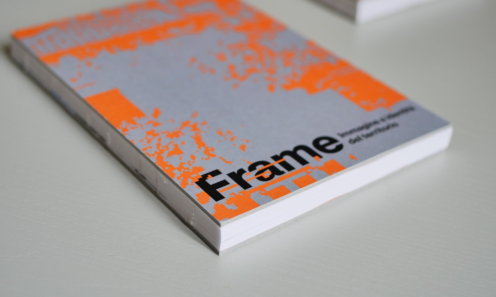
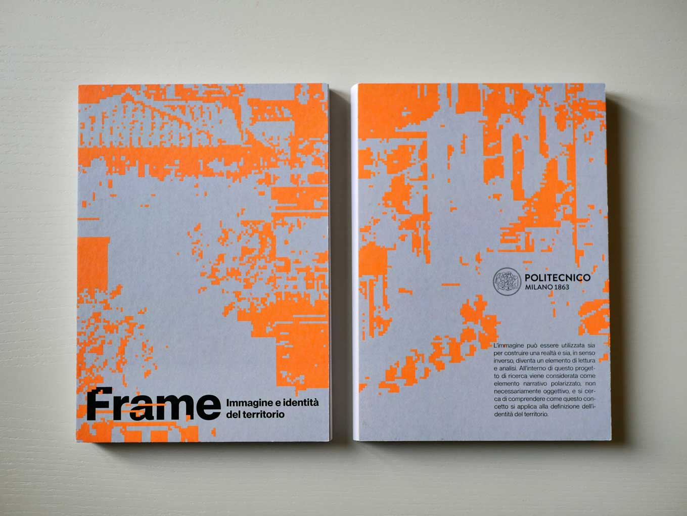
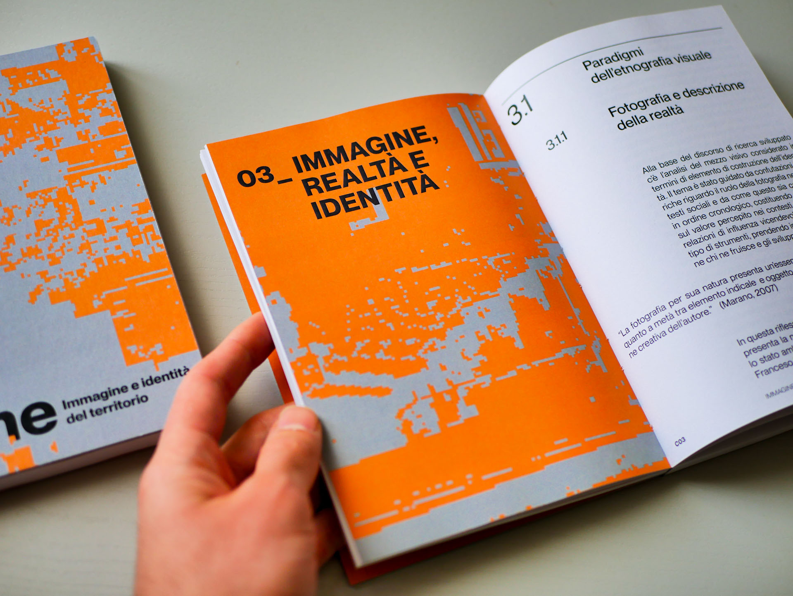
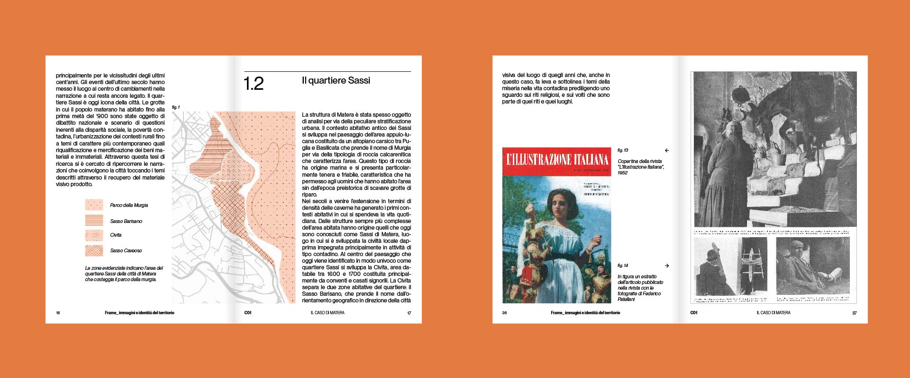
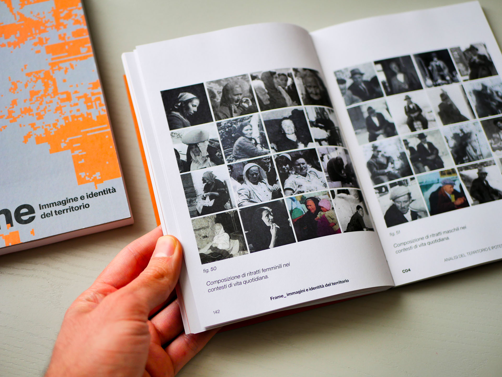
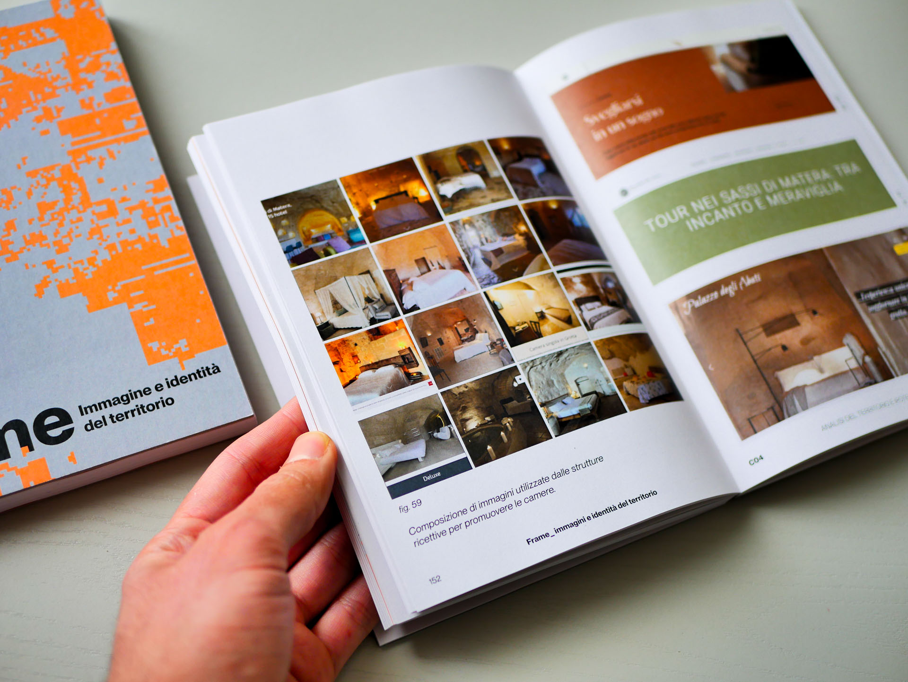
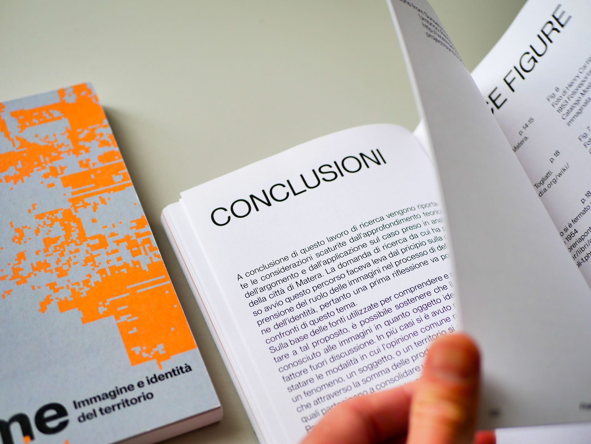

The FRAME project is a research initiative focused on developing a format forinterpreting the narrative directions of territories based on the images used todescribe them. The city of Matera was studied as a case example in this project.Visual narrative materials used to depict and promote the city were collected andcataloged, resulting in a visual synthesis presented through a video storytelling and adigital platform.